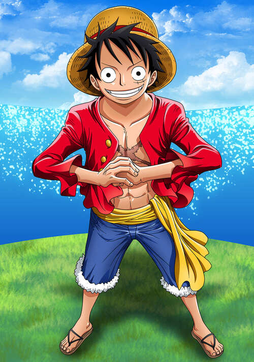

Introducción
One Piece es una serie animada japonesa (anime) basada en el manga creado por Eiichiro Oda. Su primera emisión fue en octubre de 1999, y desde entonces se ha convertido en una de las producciones más longevas y populares de la historia del anime. La serie es producida por Toei Animation y se transmite principalmente en Japón por Fuji TV, aunque ha sido distribuida internacionalmente en múltiples idiomas y plataformas. La historia está ambientada en un mundo dominado por océanos y mares, donde los piratas son protagonistas dentro del orden social y político.
El universo de One Piece es complejo y detallado. Está compuesto por varios mares, como el Grand Line y el Nuevo Mundo, todos poblados por una gran diversidad de islas y civilizaciones. Dentro de este mundo existen organizaciones como la Marina , los emperadores, y los antiguos Shichibukai (piratas aliados del gobierno), que configuran un delicado equilibrio de poder. Este entramado político y social permite que las historias de los personajes se desarrollen dentro de un contexto mucho más amplio.
La trama principal relata las aventuras de Monkey D. Luffy, un joven pirata que adquiere habilidades elásticas tras comer una Fruta del Diablo, un misterioso fruto que otorga poderes extraordinarios a quienes lo consumen. Inspirado por el legendario pirata Shanks el Pelirrojo, Luffy se propone encontrar el One Piece, un tesoro que, según se dice, se encuentra en la última isla del Grand Line, una peligrosa y enigmática ruta marítima. Luffy reúne a lo largo de la historia a una tripulación conocida como los Piratas del Sombrero de Paja, cada uno con habilidades, metas y pasados distintos.
One Piece ha explorado arcos argumentales extensos que abordan temas como la opresión, la esclavitud, la discriminación, la justicia, el sueño individual y la corrupción del poder. Aunque en apariencia es una serie de aventuras dirigida a un público joven, su contenido puede ser profundo, dependiendo del arco narrativo. Los personajes evolucionan significativamente con el paso del tiempo, enfrentando dilemas morales, tragedias personales y conflictos ideológicos que los obligan a crecer y redefinir sus objetivos.
A medida que la historia avanza, el mundo de One Piece se expande y revela secretos ocultos, como el Siglo Vacío, un periodo histórico perdido que guarda el misterio detrás del verdadero propósito del Gobierno Mundial y las antiguas civilizaciones. Esta mitología proporciona un trasfondo interesante que va más allá de las simples aventuras de piratas, estableciendo una conexión entre los eventos del pasado y los de la trama actual.
Arcos, sagas y los capítulos que incluyen
-
Saga del East Blue

Aquí empieza toda la historia y vemos los inicios de lo que será la tripulación de los Sombrero de Paja, empezando con la primera aventura de Luffy y cuando comienza a formarse el grupo antes de partir al Grand Line.
Arco de Romance Dawn
Capítulos 1 a 3
Arco de Orange Town
Capítulos 4 a 8
Arco de Villa Syrup
Capítulos de 9 a 18
Arco de Baratie
Capítulos de 19 a 30
Arco de Arlong Park
Capítulos de 31 a 44
Arco de Loguetown
Capítulo 45 y capítulos 48 a 54
Arco de la Banda de Buggy
Capítulos 46 y 47
Arco del Dragón Milenario
Capítulos 54 a 61
-
Saga de Arabasta

Han entrado en el Grand Line y la banda sigue creciendo. Deciden ayudar a la princesa Nefertari Vivi a detener la guerra civil de su país y detener a la banda de mercenarios conocida como Baroque Works.
Arco de Reverse Mountain
Capítulos 62 y 63
Arco de Whiskey Peak
Capítulos 64 y 67
Arco de Coby y Helmeppo
Capítulos 68 y 69
Arco de Little Garden
Capítulos 70 a 77
Arco de la Isla Drum
Capítulos 78 a 91
Arco de Arabasta
Capítulos 92 a 130
Arco de Historias de los Sombrero de Paja
Capítulos 131 a 135
-
Saga de Skypiea

Tras dejar atrás Arabasta, el Log Pose de Nami comienza a apuntar en una dirección muy extraña: hacia arriba. Hay una isla en el cielo y los piratas del Going Merry no van a dejar pasar la oportunidad de visitarla, así que terminan en una tierra misteriosa con un conflicto que lleva varios años a punto de explotar.
Arco de la Isla Cabra
Capítulos 136 a 138
Arco de la Niebla Arcoíris
Capítulos 139 a 143
Arco de Jaya
Capítulos 144 a 152
Arco de Skypiea
Capítulos 153 a 195
Arco de la Fortaleza Naval G-8
Capítulos 196 a 206
-
Saga de Water Seven

Tras dejar atrás la Isla del Cielo, el Merry necesita reparaciones, así que el siguiente paso en el viaje es encontrar un carpintero que se una a la tripulación. Aunque por el camino, los Sombreros de Paja se ven envueltos en una feroz competición contra otra tripulación pirata y un tesoro perdido.
Arco de Long Ring Long Land
Capítulos 207 a 219
Arco de Ocean's Dream
Capítulos 220 a 224
Arco del Regreso de Foxy
Capítulos 225 y 226
Arco de Water 7
Capítulos 227 a 265
Arco de Enies Lobby
Capítulos 226 a 312
Arco Post-Enies Lobby
Capítulos 313 a 225
-
Saga de Thriller Bark

Antes de llegar al Nuevo Mundo, la tripulación deben navegar por un extraño mar donde es muy fácil perderse para siempre. Terminan siendo capturados en la isla de Thriller Bark, que está plagada de zombies y un nuevo villano quiere arrebatarles sus sombras.
Arco de Ice Hunter
Capítulos 326 a 336
Arco de Thriller Bark
Capítulos 337 a 381
Arco de la Isla Spa
Capítulos 382 a 384
-
Saga de la Guerra de Marineford

Esta saga marca el final de la primera parte del anime antes del salto temporal. La tripulación se separa en medio de un conflicto que escala muy rápido.
Arco del Archiélago de Sabaody
Capítulos 385 a 407
Arco de Amazon Lily
Capítulos 408 a 421
Arco de Impel Down
Capítulos 422 a 425, y capítulos 430 a 456
Arco del Pequeño East Blue
Capítulos 436 a 429
Arco de Marineford
Capítulos 457 a 489
Arco Post-Marineford
Capítulos 490 a 516
-
Saga de Isla Gyojin

Tras un salto temporal de dos años, la tripulación de Luffy vuelve por fin a reunirse en el Archipiélago Sabaody para continuar su camino hacia el Nuevo Mundo...aunque antes deberán pasar por la isla de los hombres peces.
Arco de Regreso a Sabaody
Capítulos 517 a 522
Arco de la Isla Gyojin
Capítulos 523 a 574
-
Saga de Dressrosa

Una de las sagas más largas de toda la historia y marca la entrada de lleno de los Piratas de Sombrero de Paja en el Nuevo Mundo. Es una región muy peligrosa donde nos encontramos con algunos de los piratas más feroces del Grand Line.
Arco de la Ambición de Z
Capítulos 575 a 578
Arco de Punk Hazard
Capítulos 579 a 625
Arco del Secuestro de César
Capítulos 626 a 628
Arco de Dressrosa
Capítulos 629 a 746
-
Saga de Whole Cake Island

Los Sombrero de Paja consiguen reunirse en Zou y empiezan a hacer los planes necesarios para enfrentarse a Kaidou. Sin embargo, Sanji cae en las garras de Big Mom, una peligrosa pirata y una de los Cuatro Emperadores, por lo que la tripulación tendrá que meterse de lleno en su territorio para rescatar al cocinero.
Arco de Silver Mine
Capítulos 747 a 750
Arco de Zou
Capítulos 751 a 779
Arco de los Supernovas de la Marina
Capítulos 780 a 782
Arco de Whole Cake Island
Capítulos 783 a 877
-
Saga del País de Wano

La saga más larga de toda la serie y que arrancó en 2019 para llevarnos a la tierra de los samurais. También conocida como la Saga de los Cuatro Emperadores, con una alianza masiva para derrotar a Kaido y el equilibrio de poderes en el mundo estando más frágil que nunca.
Arco de Levely
Capítulos 878 a 889
Arco de Cidre Guild
Capítulos 895 y 896
Arco del País de Wano
Capítulos 897 a 906
Especial de Romance Down
Capítulo 907
Arco del País de Wano - Parte 2
Capítulos 908 a 1028
Arco del Pasado de Uta
Capítulos 1029 a 1030
Arco del País de Wano - Parte 3
Capítulos 1031 a 1085
-
Saga Final
Tras la derrota de Kaido y el nombramiento oficial de Luffy como uno de los Cuatro Emperadores del Mar, estamos cada vez más y más cerca de encontrar el One Piece y desvelar los secretos más grandes del mundo. Pero aunque estemos ya en la "Saga Final", todavía queda mucha historia por delante y no parece que Oda quiera despedirse pronto.
Arco de Egghead
Capítulos 1086 en adelante
Personajes: Los piratas Sombrero de Paja
👑 Monkey D. Luffy - El Capitán
Monkey D. Luffy, más conocido como Luffy Sombrero de Paja, es el protagonista principal de la serie de manga y anime One Piece.
Es el capitán y fundador de los Piratas de Sombrero de Paja así como uno de los Cuatro Emperadores que gobiernan los mares del Nuevo Mundo.
Comió una fruta del diablo llamada fruta Gomu Gomu, que le convirtió en un hombre de goma.
Además de esto, posee varias habilidades que le hacen ser un pirata más que especial;
un gran ejemplo de ello es la capacidad de usar el
🗡️ Roronoa Zoro - El Espadachín
Roronoa Zoro, conocido como El Cazador de Piratas, es el primer pirata que se unió a Monkey D. Luffy, y el principal combatiente de los Piratas de Sombrero de Paja, uno de sus dos espadachines y uno de los oficiales principales de la Gran Flota de Sombrero de Paja, así como un antiguo cazarrecompensas.
🧭 Nami - La Navegante
Nami, apodada Gata Ladrona, es una pirata y la navegante de los Piratas del Sombrero de Paja, así como una de los oficiales principales de la Gran Flota de Sombrero de Paja. Es el tercer miembro de la tripulación y la segunda en unirse, haciéndolo oficialmente durante el arco de Arlong Park. Ella era anteriormente un miembro de los Piratas de Arlong e inicialmente se unió a los de Sombrero de Paja con el fin de robarles, pero se unió oficialmente tras rebelarse contra Arlong y su posterior derrota a manos de Luffy.
🎯Usopp - El francotirador
Usopp es el francotirador de los Piratas de Sombrero de Paja y uno de los oficiales principales de la Gran Flota de Sombrero de Paja. Es el cuarto miembro de la tripulación y el tercero en unirse oficialmente. Es proveniente de la villa Syrup en el East Blue. Ahí ejerció como capitán de los Piratas de Usopp, pero tras los eventos del arco de Villa Syrup, se unió a los Sombrero de Paja. Su sueño es convertirse en un valiente guerrero de los mares como su padre.
🍖 Vinsmoke Sanji - El Cocinero
Sanji, conocido como Pierna Negra y nacido como Vinsmoke Sanji, es el cocinero de los Piratas de Sombrero de Paja, así como uno de los oficiales principales de la Gran Flota de Sombrero de Paja. Es el quinto miembro de la tripulación, y el cuarto en unirse. Él nació en el North Blue, siendo el primer tripulante en no ser originario del East Blue Nacido como el cuarto hijo de la familia Vinsmoke, Sanji se exilió de su país y renegó de su familia, yéndose al East Blue y pasando a trabajar como cocinero en el Baratie, hasta que decidió unirse a la banda. Es considerado parte del Trío Monstruoso junto a Luffy y Zoro; y, como tal, es uno de los combatientes más fuertes de la tripulación. Su sueño es encontrar el mar legendario conocido como All Blue.
🦴 Tony Tony Chopper - El Doctor
Tony Tony Chopper, es el médico de los Piratas de Sombrero de Paja, así como uno de los oficiales principales de la Gran Flota de Sombrero de Paja. Es un reno que comió la fruta Hito Hito de la isla de Drum. Él es el sexto miembro de la tripulación y el quinto en unirse a ella. Su sueño es poder curar cualquier enfermedad.
📖 - La Arqueóloga
, también conocida por sus epítetos: Niña Demonio y La Luz de la Revolución es la arqueóloga de los Piratas de Sombrero de Paja, así como una de los oficiales principales de la Gran Flota de Sombrero de Paja. Es el séptimo miembro de la tripulación y el sexto en unirse, haciéndolo al final del arco de Arabasta. Es introducida como una de los antagonistas secundarios más destacados de la saga de Arabasta. Sin embargo, luego de ser salvada por Monkey D. Luffy, se une a la tripulación. Su sueño es conocer la verdadera historia investigando en los poneglyphs.
🔨 Franky - El carpintero
Franky, apodado el Hombre de Hierro, es el carpintero naval de los Piratas de Sombrero de Paja y uno de los oficiales principales de la Gran Flota de Sombrero de Paja. Es el octavo miembro de la tripulación y el séptimo en unirse, haciéndolo al final del arco del regreso a Water 7. Un incidente que dañó su cuerpo le requirió convertirse en un cyborg para curarse. El sueño de Franky es crear un barco y circunnavegar el mundo con él, y construyó el Thousand Sunny y se unió a los Piratas de Sombrero de Paja para cumplir su sueño.
🎻 Brook - El Músico
Conocido como Soul King, es el músico de los Piratas de Sombrero de Paja, uno de sus dos espadachines y uno de los oficiales principales de la Gran Flota de Sombrero de Paja. Es el noveno miembro de la tripulación y el octavo en unirse, haciéndolo al final del arco de Thriller Bark. Brook consumió la fruta Yomi Yomi, que le permitió volver a la vida después de la muerte una vez. Brook aprendió con el tiempo a aprovechar más profundamente los poderes de su fruta del Diablo, dándole un control significativo sobre su propia alma y las almas de los demás. Su sueño es reunirse con su viejo amigo Laboon en la Reverse Mountain.
⚓ Jinbe - El Timonel
Es el timonel de los Piratas de Sombrero de Paja y uno de los oficiales principales de la Gran Flota de Sombrero de Paja, siendo el décimo miembro de la banda y el noveno en unirse. Es un gyojin tiburón ballena, que sirvió como antiguo capitán de los Piratas del Sol y como miembro de los Siete Señoresde la Guerra del Mar.
Cartografía

El mapa es una representación del planeta de One Piece, con las siguientes zonas significativas:
Red Line o Línea Roja: Se trata del único continente del mundo, una línea montañosa que envuelve todo el planeta.
Grand Line o Gran Línea: Se trata de un mar que recorre el ecuador del mundo de One Piece, un lugar donde ocurren cosas extraordinarias.
Los cuatro océanos que dividen el mundo la Red Line y la Grand Line:
- East Blue o Mar del Este.
- North Blue o Mar del Norte.
- West Blue o Mar del Oeste.
- South Blue o Mar del Sur.
East Blue - Mar del Este

El East Blue es el océano que conforma la parte este del Mar Azul, dividido por la Red Line y el Grand Line. Está separado del North Blue por la Línea Roja y del South Blue por la mitad Paradise de la Grand Line. El East Blue es conocido comúnmente como el mar más débil de todos. Los piratas considerados grandes y amenazantes en este mar son considerados de baja categoría en comparación con los piratas de otros mares, especialmente en el Grand Line. Irónicamente, a pesar de su escasa fama, el East Blue fue la cuna del pirata más famoso y poderoso de todos los tiempos, el difunto Rey Pirata Gol D. Roger. También se le conoce como el Mar de las Conspiraciones.
Islas pertenecientes al Mar del Este
- Isla Dawn: La isla en la que nació y creció Monkey D. Luffy
- Isla Goat
- Región insular de Yotsuba
- Pueblo Shimotsuki: donde entrenó Roronoa Zoro
- Islas Órgano
- Isla de Animales Raros
- Islas Gecko: Se encuentra
Syrup Village , ciudad natal de Usopp - Baratie: Un famoso barco restaurante en el mar. Sanji se crió acá
- Islas Conomi: Se encuentra la aldea Cocoyase, pueblo natal de Nami
- Reino de Oykot: Donde la madre adoptiva de Nami la encontró
- 77th Branch: Base de marines
- 16th Branch: Base de marines
- Loguetown: Una popular ciudad comercial. Fue el lugar donde nació y fue ejecutado Gol D. Roger
- Isla Bola de Espejos
- Tequila Wolf: Una ciudad donde se construía un puente con esclavos hacía más de 700 años
- Cozia
- Sixis
- Reino Frauce
- Reino de Nagagutsu
- Reino Satsuruzo: Reino donde nació Koby, un marine amigo de Luffy
- 8th Branch: Base de marines
- Isla Buque de Guerra: Isla situada frente a Grand Line
- Isla Perdida
- Isla Dorada
- Clockwork Island
- Ciudad de Nazawaka
Glosario
-
Jolly Roger
La Jolly Roger, también conocida como la bandera pirata, es la bandera clásica de los piratas europeos y del Caribe, vista aún hoy como una calavera con dos tibias cruzadas tras ella sobre un fondo negro. Es un símbolo reconocido de peligro en todo el mundo.
En One Piece hay muchos tipos de banderas Jolly Roger. Las Jolly Roger ayudan a los demás piratas a saber a quién pertenece la banda o que es un pirata en primer lugar.

-
La Peor Generación
La peor generación, es un término usado para referirse a los once piratas cuyas recompensas superaban los 100.000.000 berries cuando llegaron al Archipiélago Sabaody justo antes de la Guerra de Marineford, junto al actual Emperador del Mar, Marshall D. Teach.

- Marshall D. Teach
- Monkey D. Luffy
- Trafalgar D. Water Law
- Eustass Kid
- Roronoa Zoro
- Capone Bege
- Scratchmen Apoo
- Jewelry Bonney
- Basil Hawkins
- X Drake
- Killer
-
Siglo Vacío
El Siglo Vacío, también conocido como el Vacío de la Historia, es un largo período de tiempo de una centuria que comenzó hace 900 años y acabó hace 800 años desde la línea temporal actual del que no se tienen registros arqueológicos ni históricos. Por razones desconocidas, la investigación sobre este período es considerado un crimen capital por el Gobierno Mundial. Los acontecimientos de este período son tan relevantes e importantes, que se dice que, al conocerlos, uno toma conciencia de la «verdadera historia» del mundo. El sueño de Nico Robin, desde que era una niña, ha sido descubrir la verdad del Siglo Vacío.

-
Sunnachi
Sunnachi es la abreviatura de una frase que se traduce como "Dejar atrás tu nombre y fama". Se vió en el recuerdo de Ashura Doji, un samurai de Wano, con sus aliados hace diez años, cuando eran niños, entre cuarenta y cincuenta años del presente, usaron el grito de Sunnachi como una forma de aumentar su autoestima y coraje. El grito los alentó a dejar de pensar y preocuparse por el peligro en el que pueden estar y a simplemente actuar. Los compañeros de Ashura, dieron ese grito una vez más diez años antes del presente, cuando emprendieron el asalto a Onigashima para intentar derrocar a Kaido. Parece ser considerado un lenguaje grosero usado por los plebeyos, ya que Kikunojo, una samurai, le dijo a Kozuki Momonosuke que era inapropiado para él, como hijo de un daimyo, usarlo.

-
Voluntad heredada
La voluntad heredada, se refiere a transmitir los propios sueños e ideales a las generaciones futuras. es la idea de que los vivos portarán los ideales de las generaciones pasadas. Aquellos que creen en el concepto de heredado tenderán a aceptar su propia mortalidad y confiarán sus sueños a la gente de la próxima era. La voluntad heredada no es algo vinculado por sangre o linaje.
La primera mención de la voluntad heredada dada en la serie se presentó en una cita de Gol D. Roger. Roger creía que esta era una de las cosas que nunca podría detenerse mientras el hombre buscara la respuesta a la libertad
Estas cosas no se pueden detener: voluntad heredada. Sueños de la gente. El reflujo y el fluir de las edades. Mientras la gente busque la respuesta a la libertad, ¡nunca dejará de serlo! -Rey pirata Gold Roger